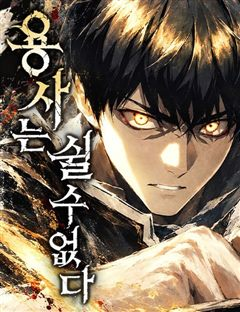
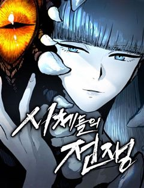

별을 품은 소드마스터 같은 웹툰 추천

별을 품은 소드마스터 · 홍대의 / 주노 / Q10
별을 품은 소드마스터 재밌게 봤다면 이 웹툰들도 좋아할 거예요. 같은 장르이면서 용사, 중세판타지액션, 소년왕도물 같은 요소가 겹치는 작품을, 겹치는 요소가 많은 순서로 20개 골랐어요.
2026-10-08 기준 · 네이버웹툰·카카오웹툰·레진코믹스 · 성인 작품 제외
내 취향으로 직접 골라 추천받기 →-
1
 네이버웹툰
네이버웹툰던전짐꾼
타고난 재능을 가진 자들만이 던전을 토벌하는 모험가가 될 수 있는 세계. 세상은 '나기'를 모험가가 될 수 없는 짐꾼으로 규정했다. 하지만 던전을 클리어 하면 그게 모험가잖아? 전투 스킬 0! 생존 능력 만렙! 운명을 거스르는 만능 짐꾼 나기의 던전…
용사중세판타지액션소년왕도물소년물판타지액션네이버웹툰에서 보기 → -
2
 네이버웹툰
네이버웹툰나태 공자, 노력 천재 되다
잠을 도피처로 삼아 온 소년 아이른 파레이라. 사람들은 그를 나태 공자라 부르며 조롱했지만 그는 변할 생각이 없었다. 어느 날 어느 검사의 꿈을 꾸기 전까지는... 그것은 그저 묵묵히 수십 년간 검을 휘두르며 단련하는 한 재능 없는 사내에 관한 꿈이…
중세판타지액션소년왕도물서양성장물판타지액션네이버웹툰에서 보기 → · 나태 공자, 노력 천재 되다 같은 웹툰 → -
3
 네이버웹툰
네이버웹툰심검의 용사
심검을 뽑을 수 있는 자들을 사람들은 '용사'라 부른다. 엘런은 용사가 되기 위해 여행을 떠나지만, 꿈꾸던 영웅의 실체는 잔혹한 살인 병기에 지나지 않았다. 엘런은 과연 현실을 이겨내고 진정한 용사가 될 수 있을 것인가?
용사소년왕도물소년물성장물판타지액션네이버웹툰에서 보기 → -
4
 네이버웹툰
네이버웹툰해피 페이스
투기장에서 노예로 자란 해피는 괴물 같은 실력으로 생존해왔다. 투기장 주인이 사형되는 사건이 생기며 해방된 해피는 새로운 가족과 친구들을 만나며 조금씩 사회를 배워간다. 하지만 세상은 해피에게 싸움을 멈출 기회를 주지 않았다. 자신의 신분, 범죄와의…
중세판타지액션소년왕도물서양소년물판타지액션네이버웹툰에서 보기 → -
5
 네이버웹툰
네이버웹툰66666년 만에 환생한 흑마법사
강대했던 흑마법사 디아블로 볼피르. 12신의 계략에 당해 억겁 속에 봉인되었지만, 그로부터 66666년이 흘러 다시금 이 땅에 강림한다! "응애!" 웰턴 백작의 갓 태어난 장남으로. 딥다크 매직 판타지 시작!
중세판타지액션서양성장물판타지액션네이버웹툰에서 보기 → · 66666년 만에 환생한 흑마법사 같은 웹툰 → -
6
 네이버웹툰
네이버웹툰멸망한 가문의 회귀자
후회로만 가득한 생. 스스로의 잘못을 깨닫고 다시 사람이 되고자 했을 때, 이미 가문은 불타 사라진 뒤였다. 발악 같은 분노로 하루하루 연명하던 삶. 그 절망의 끝에서, 간절한 염원이 하늘에 닿았다. 용서받지 못한 자. 운명을 거슬러 검을 들다.
중세판타지액션서양성장물판타지액션네이버웹툰에서 보기 → -
7
 네이버웹툰
네이버웹툰나태한 마왕은 신과 싸우기로 결심한다.
갑작스레 인간들의 성 '소돔'에 강림한 신들. 소돔 반대편에 있는 마왕을 데려오라는 말에 함께 인간들을 학살하기 시작한다. 지옥도가 펼쳐진 상황에서 몰래 성을 뛰쳐나온 한 명의 기사는 마왕을 데리러 가게 된다. 2024년 4월 독자 PICK 선정작!
용사중세판타지액션서양판타지액션네이버웹툰에서 보기 → -
8
 네이버웹툰
네이버웹툰검 먹는 소드마스터
영문조차 모른 채 소드마스터에게 모든 것을 잃은 아르한. 죽음 같은 절망 속에서, 전설로만 전해지던 선조 리암 카라반이 모습을 드러낸다. 리암이 제시한 아르한의 유일한 복수 방법은 바로- “검을 먹고, 그 안에 깃든 힘을 자신의 것으로 만들어라.”…
중세판타지액션소년물성장물판타지액션네이버웹툰에서 보기 → -
9
 네이버웹툰
네이버웹툰딜리버리 임파서블
"라비, 할 수 있지? 널 믿는다." 영원한 겨울 아래 눈으로 뒤덮인 세상. 빈민가에서 마약을 팔며 살아가는 소녀 라비는, 동경하는 배달부 헤더의 뜻을 이어 희망의 장소 '북쪽 도시'로 배달을 시작한다. 그런데 사실, 그녀가 배달하려던 것은... 춥…
중세판타지액션소년물성장물판타지액션네이버웹툰에서 보기 → -
10
 네이버웹툰
네이버웹툰별과 사슬이 뜨는 섬
헌터의 꿈을 가졌지만 재능은 없는 만년 지망생 ‘기승현’. 그런 그의 앞에 12년간 혼수상태에 빠져있던 누나 ‘기소현’이 깨어나게 된다. 누나의 기상과 함께, 정체되어 있던 운명의 수레바퀴가 돌아가기 시작한다.
소년왕도물소년물성장물판타지액션네이버웹툰에서 보기 → -
11

네이버웹툰용사는 쉴 수 없다
마왕을 죽이고도 현실로 돌아가지 못한 용사 라온. 이건 돌아가기 위해 또 다른 세계를 구해야 하는, 쉬고 싶지만 쉴 수 없는 2회차 용사의 이야기다.
용사중세판타지액션판타지액션네이버웹툰에서 보기 → -
12

네이버웹툰시체들의 전쟁
네크로맨서들이 자신만의 기사를 만들어 싸우는 이 시대 최고의 스포츠 '시체들의 전쟁'. 수많은 사람들이 열정과 꿈을 불태우며 싸우는 잔혹한 싸움 속, 최후의 승자는 누가 될 것인가.
소년왕도물소년물성장물판타지액션네이버웹툰에서 보기 → -
13
 네이버웹툰
네이버웹툰미모사
세상 중심의 장막을 둘러싼 전쟁이 끝났다. 하지만 장막이 남긴 것은 전쟁뿐만이 아니었다. 장막을 쫓는 자, 장막을 닫으려는 자, 특별한 능력을 쓰는 자, 전쟁 병기, 치안을 어지럽히는 자, 희망을 가져다주는 자, 걸어온 삶을 부딪치는 자, 등에 멘…
소년왕도물소년물성장물판타지액션네이버웹툰에서 보기 → -
14
 네이버웹툰
네이버웹툰그림으로 승부
이계가 침공하는 세계, 그리고 히어로가 맞서는 세상. 오직 ‘그림’만 잘 그리는 약자 김군은 어린 시절부터 그려온 상상의 히어로 ‘마틴’을 현실로 소환한다. 힘이 아닌 창의력과 예술적 열정으로 세상을 지키는 소년의 성장 판타지 액션
소년왕도물소년물성장물판타지액션네이버웹툰에서 보기 → -
15
 네이버웹툰
네이버웹툰카루나
돈과 과학이 교리인 집단 ‘뱅크’. 그들의 시설에서 자란 라만은 평생 잡역부로 살다 죽을 운명이었다. 그러던 어느 날, 악마와 얽힌 사건 속에서 뱅크가 철저히 부정해 온 ‘신의 힘’ 아스트라를 각성한다. 하루아침에 운명이 뒤집힌 라만은 악마를 사냥하…
소년왕도물소년물성장물판타지액션네이버웹툰에서 보기 → -
16
 네이버웹툰
네이버웹툰야매 힐러로 사는 법
어느 날 강승현은 이곳 아즐 대륙에서 눈을 떴다. 이유는 모른다. 그냥 깨어나고 보니 한국이 아닌 판타지 세계에 던져진 것이다. ‘내가 왜 이딴 곳에 온 걸까.’ 그때 눈앞에 떠오르는 상태창 [당신의 직업은 힐러'?입니다.] 하지만 그의 스킬 중에는…
용사서양판타지액션네이버웹툰에서 보기 → -
17
 네이버웹툰
네이버웹툰마법사가 죽음을 맞이하는 방법
“이제 끝내고 싶어.” 사악한 드래곤을 없애야 죽을 수 있다는 저주로 인해, 300년이라는 긴 시간을 살아온 대마법사 엔테. 마침내 드래곤을 물리치고 안식을 맞이했으나 눈을 뜬 곳은 사후세계가 아닌, 휘황찬란한 귀족 저택이었다. 더군다나 마법이라곤…
중세판타지액션서양판타지액션네이버웹툰에서 보기 → -
18
 네이버웹툰
네이버웹툰용사참수인
사형집행인으로 용사를 참수하고 은퇴하여 자유인이 된 데닐 패트릭은 한적한 산골에서 무료한 나날을 보낸다. 그러던 어느 날 난데없이 딸이라고 찾아온 아이의 등장에 데닐 패트릭의 인생은 산골을 벗어나 전 대륙을 향하게 되는데...
중세판타지액션서양판타지액션네이버웹툰에서 보기 → -
19
 네이버웹툰
네이버웹툰히어로메이커
왕은 영웅이 되고 싶어하는 공주의 소원을 들어주기로 전격 결심! 공주를 속이고 마치 영웅이 된 것처럼 만들기 위해 온 나라가 연극을 하게 되는데..파란만장한 그들만의 눈물겨운 영웅만들기의 대장정이 펼쳐집니다~
용사서양성장물판타지네이버웹툰에서 보기 → -
20
 네이버웹툰
네이버웹툰용사의 발라드
양치기로 10년, 전쟁터에서 10년, 희대의 살인마로 10년. 하이덴 들판의 양치기로 시작하여 소드 마스터이자 죽음을 몰고 다니는 강철 사신으로 죽은 남자, 리키. 불과 강철, 피, 죽음의 냄새와 비명만이 가득한 삶을 보냈던 그는 들판에서 쓸쓸한 죽…
용사소년물판타지액션네이버웹툰에서 보기 →